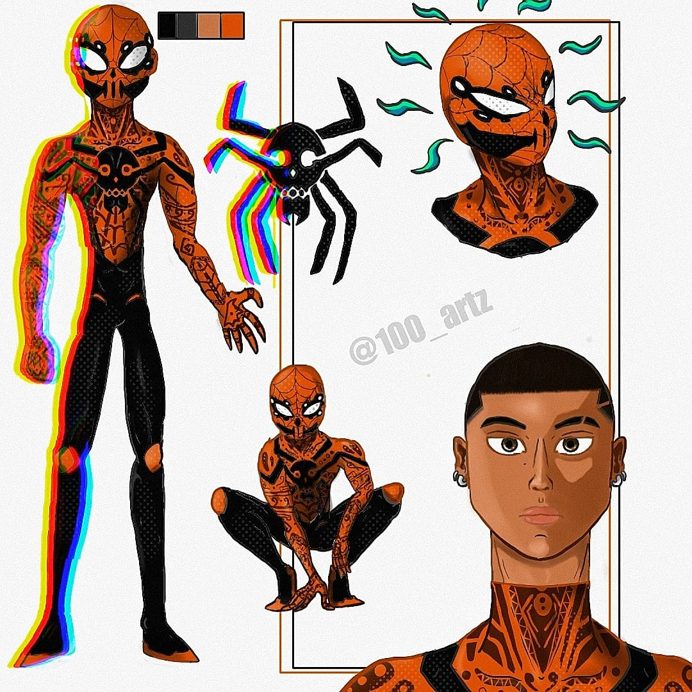
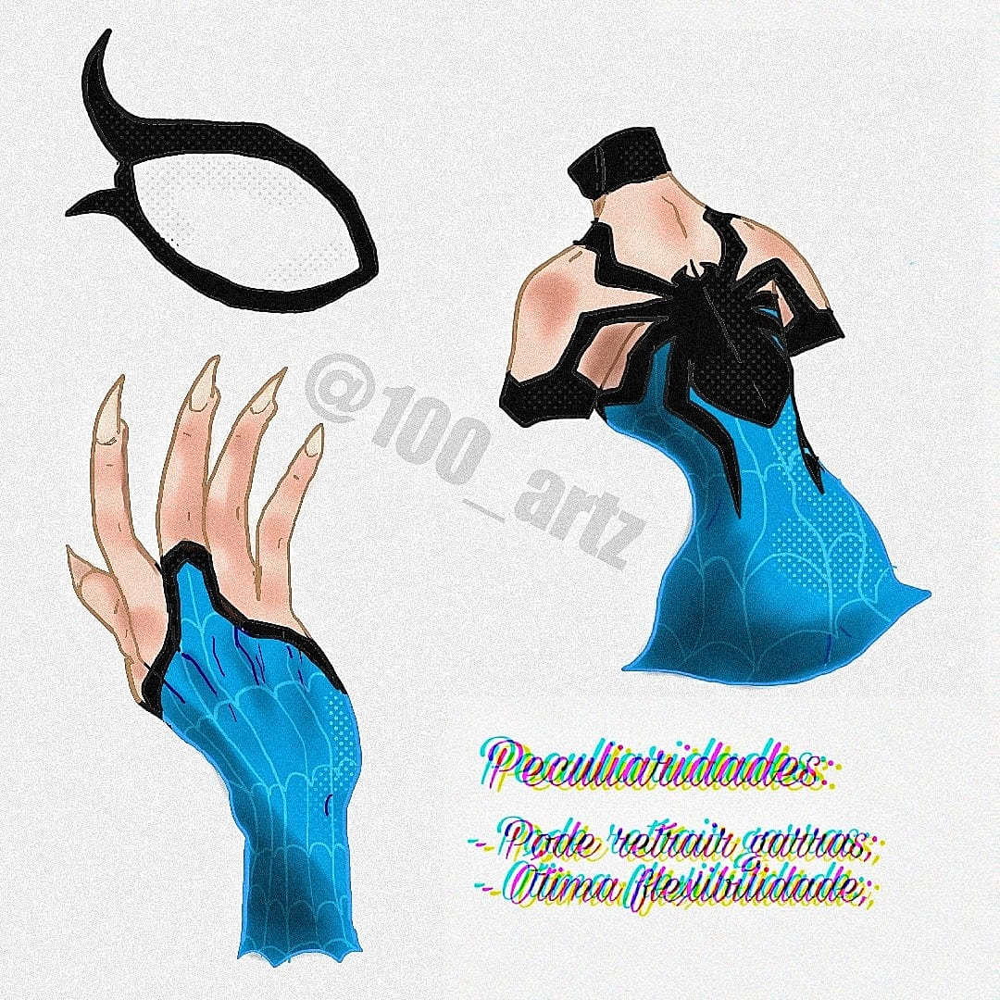

Spider Verso é um projeto inspirado no filme homem aranha no aranhaverso 2, aonde dedico a fazer ilustração dos meus clientes na versão do amigão da vizinha.
Nesse projeto, eu faço a descrição completa do que meu cliente deseja em questão de uniforme,cores,cultura e o nome de heroí aranha. E eu divido em três partes, a capa, a amostragem do uniforme e percularidade ou poderes únicos.
A capa vai compor aonde vai mostrar o título com o nome que o cliente preferir, a ediçaõ variante e detalhes sobre a aranha dele.
A amostragem do uniforme, que seria sobre o estilo único do uniforme, que irá compor cores favoritas, a ilustrçaõ do cliente no estilo aranhaverso e o simbolo da aranha.
A percularidade é os poderes que você deseja ter, como a bio eletricidade do Miles Morales que é algo único dele, poder ser qualquer tipo de poder.
A continuação desse projeto vai ser realizada quando a parte 2 do filme for lançada em 2024, caso ja imaginou como seria a sua versão só vim na bio e me dizer.